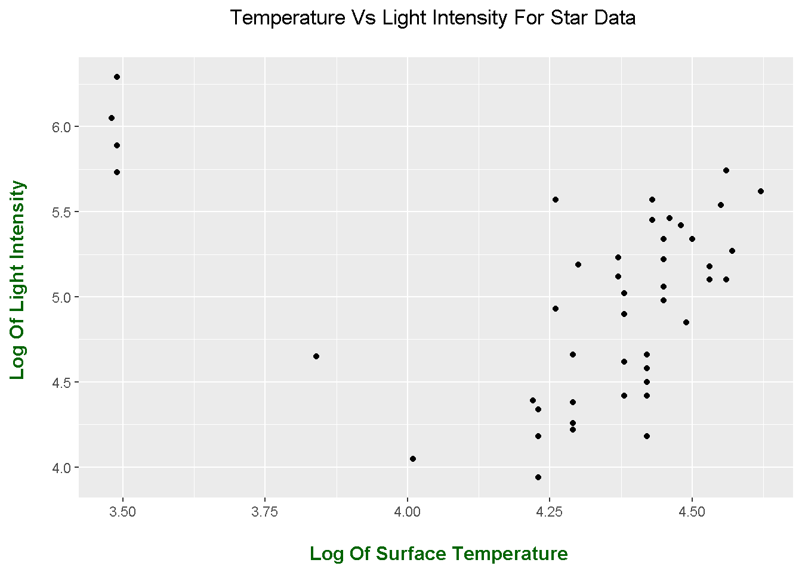
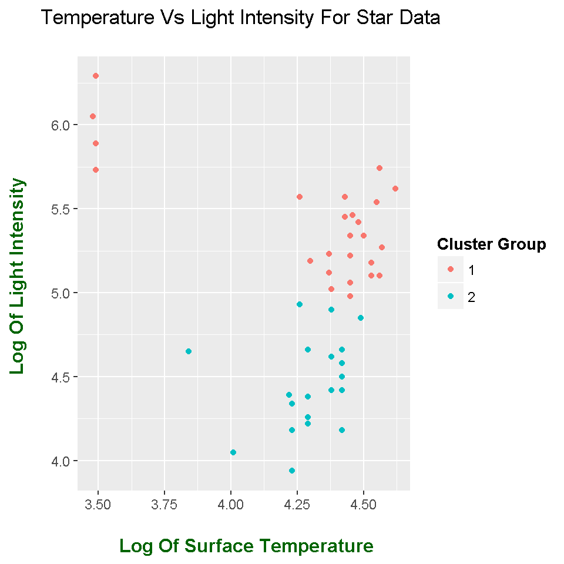
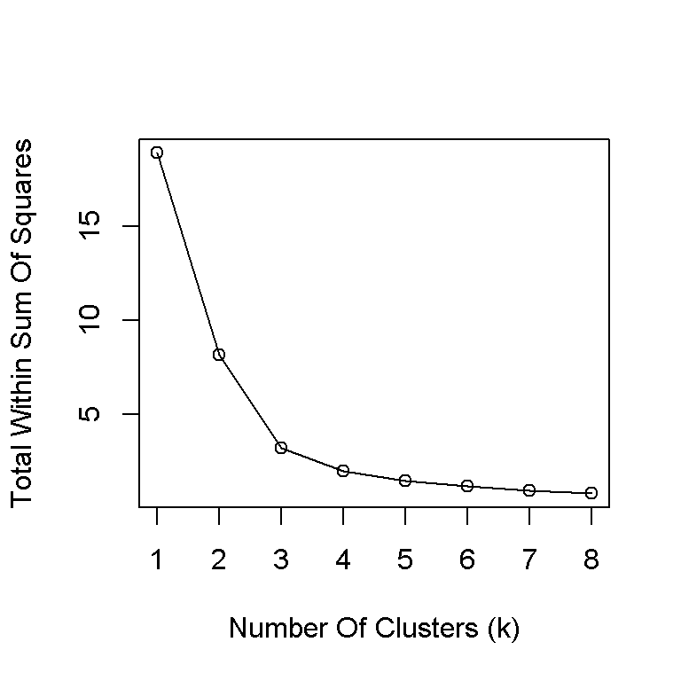
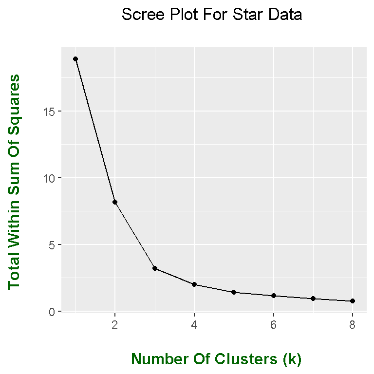
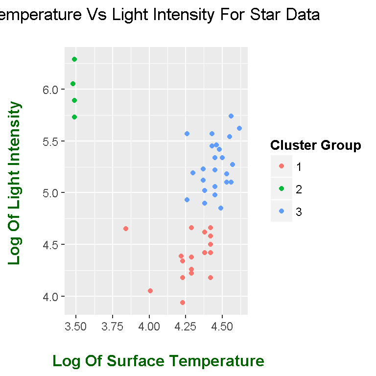
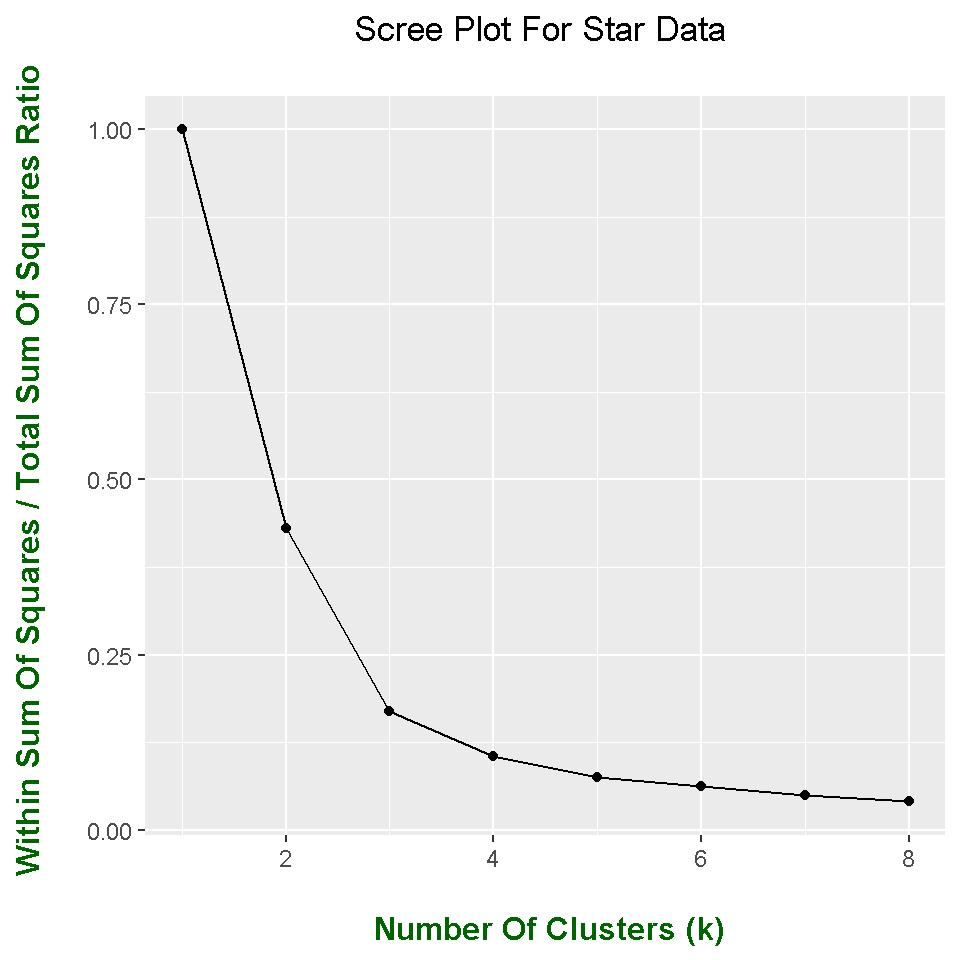
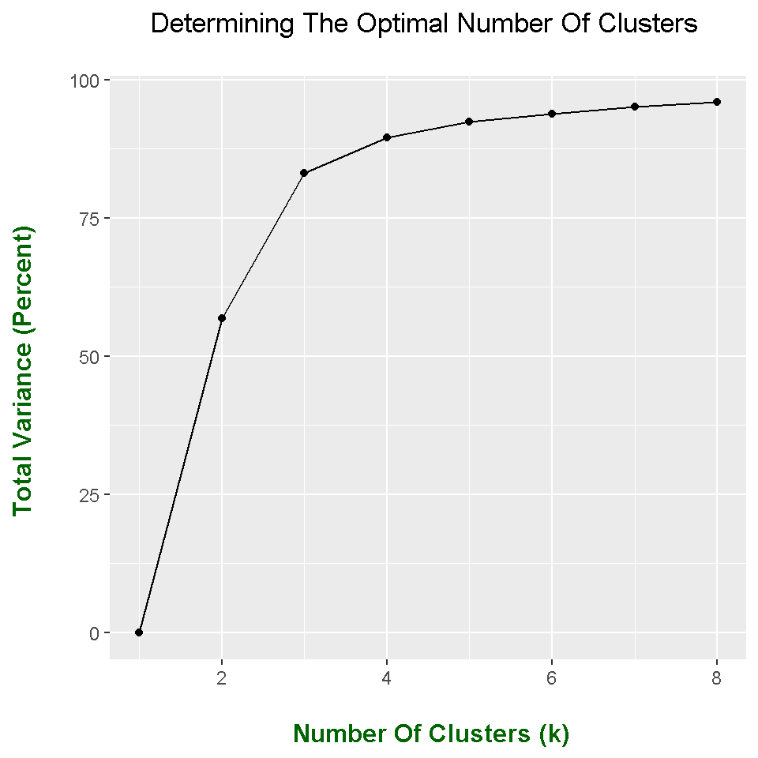
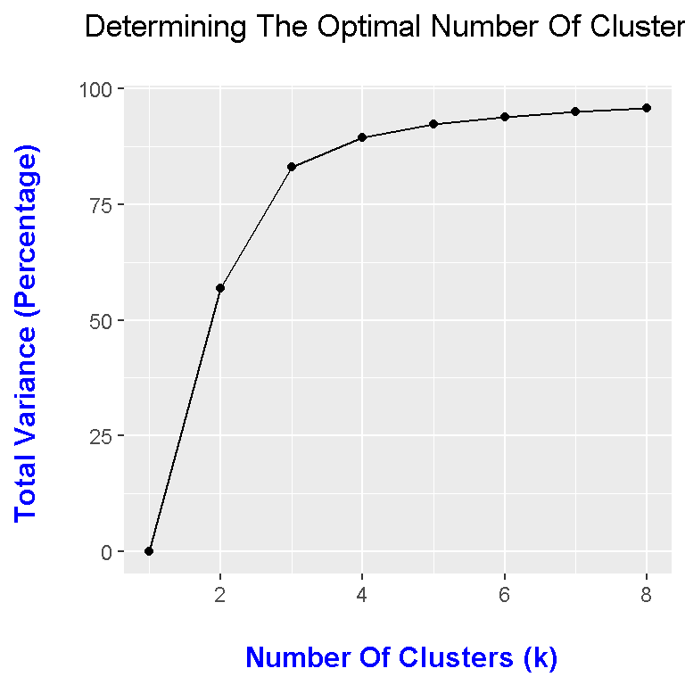

Hi. I have been doing some self-learning on R and this topic of the K-Means Algorithm. The contents below is based on me using the K-Means Algorithm on a small dataset as practice. Since I am a student of this topic, the information presented here may not be exact.
The K-Means Algorithm is an unsupervised machine learning method which takes a collection of data points and partitions them into clusters (or subsets of the original data). This clustering method is useful for analyzing patterns within data and for labeling certain groups based on the data.
Here is some references that I have used here.
R Graphics Cookbook By Winston Chang
R Documentation (on kmeans).
http://stackoverflow.com/questions/14524818/results-of-k-means-used-in-r
Datacamp videos and notes have been useful. One video that I have used is this.
The dataset I am using is from the faraway library in R. This data is called star and I renamed this as star_data. The R documentation for this dataset is also included below the code.
library(faraway)
library(ggplot2)
# Save star data from faraway data to star_data variable:
star_data <- star
# Preview data:
head(star_data)## index temp light
## 1 1 4.37 5.23
## 2 2 4.56 5.74
## 3 3 4.26 4.93
## 4 4 4.56 5.74
## 5 5 4.30 5.19
## 6 6 4.46 5.46
The index column is not really needed and it can be removed.
# Remove first column as it is not needed:
star_data <- star_data[, 2:3]
I can further examine the data by using the functions summary() and str().
# Summary and data structure:
summary(star_data)## temp light
## Min. :3.480 Min. :3.940
## 1st Qu.:4.275 1st Qu.:4.540
## Median :4.420 Median :5.100
## Mean :4.310 Mean :5.012
## 3rd Qu.:4.455 3rd Qu.:5.435
## Max. :4.620 Max. :6.290str(star_data)## 'data.frame': 47 obs. of 2 variables:
## $ temp : num 4.37 4.56 4.26 4.56 4.3 4.46 3.84 4.57 4.26 4.37 ...
## $ light: num 5.23 5.74 4.93 5.74 5.19 5.46 4.65 5.27 5.57 5.12 ...
From the str() output, we see that the dataset has 47 observations (rows) and 2 variables (columns). It is not a large dataset but I am using this for illustration purposes.
Here is a scatterplot of the data (before clustering).
# Initial Plot (With Full Labels)
ggplot(star_data, aes(x = temp, y = light)) + geom_point() +
labs(x = "\n Log Of Surface Temperature", y = "Log Of Light Intensity \n",
title = "Temperature Vs Light Intensity For Star Data \n") +
theme(plot.title = element_text(hjust = 0.5),
axis.title.x = element_text(face="bold", colour = "darkgreen", size = 12),
axis.title.y = element_text(face="bold", colour = "darkgreen", size = 12),
legend.title = element_text(face="bold", size = 10))
The k-means algorithm takes a set of points (data) and splits/partitions them into k clusters. The user has the choice in determining how many clusters (k) he/she wants from the data.
As I am learning the k-means algorithm myself, my explanation on this may be off but I will give it a try.
Before the first iteration, the data is split into k clusters. The number of k clusters is user-defined. For each cluster a centroid/midpoint (average point) is associated with the cluster. There would be k centroids.
The iterative steps are as follows:
For an alternate explanation, please refer to the Youtube video placed in the References section above.
The k-means algorithm is not difficult to use in R. In R, it can be achieved by using the kmeans() function. Type in ?kmeans to load up the R documentation for the kmeans() function in R.
I first place a random seed in R. This is for reproducibility purposes. If you use this same random seed, you would get the same output and plot as me. If this random seed is not there, then outputs will vary even though you may run the code repeatedly.
# Set random seed:
set.seed(20)
star_Cluster <- kmeans(star_data, centers = 2, nstart = 25)
star_Cluster## K-means clustering with 2 clusters of sizes 27, 20
##
## Cluster means:
## temp light
## 1 4.320741 5.423704
## 2 4.295500 4.456500
##
## Clustering vector:
## 1 2 3 4 5 6 7 8 9 10 11 12 13 14 15 16 17 18 19 20 21 22 23 24 25
## 1 1 2 1 1 1 2 1 1 1 1 1 1 2 2 2 2 2 2 1 2 2 2 2 1
## 26 27 28 29 30 31 32 33 34 35 36 37 38 39 40 41 42 43 44 45 46 47
## 2 2 2 2 1 2 1 1 1 2 1 1 1 1 1 2 1 1 1 1 1 2
##
## Within cluster sum of squares by cluster:
## [1] 6.254615 1.891550
## (between_SS / total_SS = 56.9 %)
##
## Available components:
##
## [1] "cluster" "centers" "totss" "withinss"
## [5] "tot.withinss" "betweenss" "size" "iter"
## [9] "ifault"
The above code is an examples of kmeans() in R. I use 2 clusters as indicated by centers = 2, and nstart = 25. The R documentation states the nstart refers to the number of random sets chosen. I don’t know too much about nstart so I would have to look more into it. By default, iter.max is 10 which is the amount of iterations.
The outputs also gives information on how many points are in each cluster, which points go with which cluster, and the available components from kmeans().
In the next lines of code, I convert the cluster component to factors in order to enable the colour fills in ggplot2. The ggplot2 code and plot can be found below.
# Create new copy of star_data for kmeans with 2 clusters
star_data_cl2 <- star_data
# Add star_Cluster cluster component as new column to star_data_cl2:
star_data_cl2$clusterType <- as.factor(star_Cluster$cluster)
# Plot with Two Clusters Indicated By Colours:
ggplot(star_data_cl2, aes(x = temp, y = light, colour = clusterType)) +
geom_point() +
labs(x = "\n Log Of Surface Temperature", y = "Log Of Light Intensity \n",
title = "Temperature Vs Light Intensity For Star Data \n",
colour = "Cluster Group") +
theme(plot.title = element_text(hjust = 0.5),
axis.title.x = element_text(face="bold", colour = "darkgreen", size = 12),
axis.title.y = element_text(face="bold", colour = "darkgreen", size = 12),
legend.title = element_text(face="bold", size = 10))
One natural question is what does the k-means algorithm output? What does it all mean? I try to figure it out using the R documentation. I have included a screenshot of the R documentation for the output of kmeans.
The cluster output component outputs a vector of integers from 1 to the number of clusters inputted into kmeans() which is k. This vector shows which points go with each cluster. In this case the first point goes to cluster 1, the second point goes to cluster two and so on until observation/point 47 in the star data.
## Understanding the outputs of k-means:
# cluster output from star_cluster:
star_Cluster$cluster## 1 2 3 4 5 6 7 8 9 10 11 12 13 14 15 16 17 18 19 20 21 22 23 24 25
## 1 1 2 1 1 1 2 1 1 1 1 1 1 2 2 2 2 2 2 1 2 2 2 2 1
## 26 27 28 29 30 31 32 33 34 35 36 37 38 39 40 41 42 43 44 45 46 47
## 2 2 2 2 1 2 1 1 1 2 1 1 1 1 1 2 1 1 1 1 1 2
Centroid positions from each cluster can be determined from the centers output component from kmeans(). The first row represents the centroid for the first cluster and the second row represents the centroid position for the second cluster.
# Cluster centres:
star_Cluster$centers## temp light
## 1 4.320741 5.423704
## 2 4.295500 4.456500
Using the size component gives the number of points assigned to each cluster. Note that the number of points in each cluster do not have to be equal. The first cluster has 27 points while the second cluster has 20 points assigned to it from the 47 in the star data.
# Size Of Each Cluster:
star_Cluster$size## [1] 27 20
Here is the number of iterations. I am not sure what the documentation means by outer iteration. I would have to look at it in more detail.
# Number of Iterations:
star_Cluster$iter## [1] 1
There is an ifault component which I am not familiar with. The documentation says it’s for experts.
# ifault component:
star_Cluster$ifault## [1] 0
I left these remaining output components last as there are linked together and they are important. I think these measures use Euclidean distance by default.
The withinss output component creates a vector of within-cluster sum of squares. The within-cluster sum of squares takes the sum of squares within each cluster. That is, we take the sum of the squares of each point minus In math notation, it would be something like:
\[\sum_{i = 1}^{p} (\mathbf{x_i} - \mathbf{\bar{x_{k}}})^2\]
where there are \(p\) points in the k-th cluster and\(\mathbf{\bar{x_{k}}}\) is the centroid of the k-th cluster. Note the boldface notation as each \(\mathbf{x_i}\) point has a x-coordinate and a y-coordinate in two dimensions. In three dimensions, points are in (x, y, z) format and so on.
# Within Cluster sum of squares (Sum Of Squares In Each Cluster):
star_Cluster$withinss## [1] 6.254615 1.891550
The tot.withinss output component gives the total within cluster sum of squares. This is the sum of the above components of the vector.
# Total Within Sum of Squares (Add Within Cluster SumSquares Together):
star_Cluster$tot.withinss## [1] 8.146165
Between clusters sum of squares are given by betweenss. I am not exactly sure if it measures from centroid to centroid between clusters or from the nearest points between clusters. That would require some further investigation.
# Between Clusters Sum Of Squares:
star_Cluster$betweenss## [1] 10.75542
The total sum of squares is the sum of the between clusters sum of squares and the total within cluster sum of squares. (i.e. TSS = BSS + TWSS) This formula is used in the later section where there are alternate plots for choosing k clusters.
# Total Sum Of Squares = BetweenSumSquares + Total Within SumSquares
star_Cluster$totss## [1] 18.90159
When it comes this k-means algorithm, one may want to use some sort of metric or aid to help in choosing the number of clusters. The scree plot with the elbow method is one way to help in determining the optimal number of clusters.
Note that this approach is from a statistics and optimization perspective. The chosen number of clusters could vary depending on the context of the data.
In the previous section, I did the k-means algorithm for 2 clusters. I want to compare the algorithm from 1 cluster to 8 clusters. (You could use more than 8 clusters if you want to be more thorough.) A for loop is used to help build the scree plot.
#### Optimal Amount Of Clusters (k):
# Scree Plot For Determining Optimal k Clusters.
total_wsumsq <- rep(0, 8) #Initialize
for (k in 1:8){
star_kmeans <- kmeans(star_data, centers = k, nstart = 25)
# Scree Plot use total within cluster sum of squares
total_wsumsq[k] <- star_kmeans$tot.withinss
}
## Scree Plot In Base R:
plot(x = 1:8, y = total_wsumsq , xlab = "Number Of Clusters (k)",
ylab = "Total Within Sum Of Squares") +
lines(x = 1:8, y = total_wsumsq)
## integer(0)
From the above scree plot, the “elbow” of the plot is at k = 3 (or you could say k = 4).
The ggplot2 Version Of The Scree Plot
If you want to get fancy and add colour to the scree plot. Here is the ggplot2 version of the scree plot.
## ggplot2 Version Of Scree Plot:
# Create table
scree_table <- data.frame(cbind(1:8, total_wsumsq))
scree_table ## V1 total_wsumsq
## 1 1 18.9015872
## 2 2 8.1461648
## 3 3 3.1994379
## 4 4 1.9850971
## 5 5 1.4314322
## 6 6 1.1715345
## 7 7 0.9351188
## 8 8 0.7721180# Change column names:
colnames(scree_table) <- c("k", "TWSS")
# Scree ggplot plot:
ggplot(scree_table, aes(x = k, y = TWSS)) + geom_point() + geom_line() +
labs(x = "\n Number Of Clusters (k)", y = "Total Within Sum Of Squares \n",
title = "Scree Plot For Star Data \n") +
theme(plot.title = element_text(hjust = 0.5),
axis.title.x = element_text(face="bold", colour = "darkgreen", size = 12),
axis.title.y = element_text(face="bold", colour = "darkgreen", size = 12),
legend.title = element_text(face="bold", size = 10))
The “elbow” of the scree plot is k = 3 (or k = 4).
Choosing the number of clusters as three, here is the code and output for the K-Means algorithm on the star data.
# From scree plot, choose k = 3 as our optimal choice for k:
star_km3 <- kmeans(star_data, centers = 3, nstart = 25)
star_km3## K-means clustering with 3 clusters of sizes 17, 4, 26
##
## Cluster means:
## temp light
## 1 4.281176 4.379412
## 2 3.487500 5.990000
## 3 4.455385 5.275385
##
## Clustering vector:
## 1 2 3 4 5 6 7 8 9 10 11 12 13 14 15 16 17 18 19 20 21 22 23 24 25
## 3 3 3 3 3 3 1 3 3 3 2 3 3 1 1 1 1 1 1 2 1 1 1 3 3
## 26 27 28 29 30 31 32 33 34 35 36 37 38 39 40 41 42 43 44 45 46 47
## 1 1 3 1 2 1 3 3 2 1 3 3 3 3 3 1 3 3 3 3 3 1
##
## Within cluster sum of squares by cluster:
## [1] 1.165071 0.171275 1.863092
## (between_SS / total_SS = 83.1 %)
##
## Available components:
##
## [1] "cluster" "centers" "totss" "withinss"
## [5] "tot.withinss" "betweenss" "size" "iter"
## [9] "ifault"
# Create table:
star_km3_cl <- star_data
# Add star_km3 cluster component as new column to star_km3:
star_km3_cl$clusterType <- as.factor(star_km3$cluster)
# Plot with Clusters Indicated By Colours:
ggplot(star_km3_cl, aes(x = temp, y = light, color = clusterType)) +
geom_point() +
labs(x = "\n Log Of Surface Temperature", y = "Log Of Light Intensity \n",
title = "Temperature Vs Light Intensity For Star Data \n",
colour = "Cluster Group") +
theme(plot.title = element_text(hjust = 0.5),
axis.title.x = element_text(face="bold", colour = "darkgreen", size = 12),
axis.title.y = element_text(face="bold", colour = "darkgreen", size = 12),
legend.title = element_text(face="bold", size = 10))
First Alternate Plot
The scree plot above used the total within sum of squares versus the k number of clusters. This scree plot uses the number of clusters (k) vs the ratio of total within sum of squares over the total sum of squares.
Here is the code and output.
### --- An Alternate Scree Plot - One (Proportions):
# Alternate Scree Plot For Determining Optimal k Clusters.
ratio <- rep(0, 8)
for (k in 1:8){
star_kmeans <- kmeans(star_data, centers = k, nstart = 25)
# Scree Plot use total within cluster sum of squares divided by
# Total sum of squares as a ratio
ratio[k] <- star_kmeans$tot.withinss / star_kmeans$totss
}
# Create table
alt_scree <- data.frame(cbind(1:8, ratio))
alt_scree## V1 ratio
## 1 1 1.00000000
## 2 2 0.43097782
## 3 3 0.16926821
## 4 4 0.10502277
## 5 5 0.07573080
## 6 6 0.06198074
## 7 7 0.04961176
## 8 8 0.04084937# Change column names:
colnames(alt_scree) <- c("k", "Ratio")
# Scree ggplot plot:
ggplot(alt_scree, aes(x = k, y = Ratio)) + geom_point() + geom_line() +
labs(x = "\n Number Of Clusters (k)", y = "Within Sum Of Squares / Total Sum Of Squares Ratio \n", title = "Scree Plot For Star Data \n") +
theme(plot.title = element_text(hjust = 0.5),
axis.title.x = element_text(face="bold", colour = "darkgreen", size = 12),
axis.title.y = element_text(face="bold", colour = "darkgreen", size = 12),
legend.title = element_text(face="bold", size = 10))
Second Alternate Plot
Recall that after viewing the scree plot (elbow method) the chosen number of clusters was k = 3. The kmeans output included this part:
Within cluster sum of squares by cluster:
[1] 1.165071 0.171275 1.863092
(between_SS / total_SS = 83.1 %)
This ratio of between clusters sum of squares over the total sum of squares is the total variance. This total variance is the total variance in the data explained by the clusters. I would like to plot this total variance versus the number of clusters (k).
## An Alternate Scree Plot - Two (Total Variance) :
total_var <- rep(0, 8)
for (k in 1:8){
star_kmeans <- kmeans(star_data, centers = k, nstart = 25)
# Scree Plot with total variance: Between Sum Of Squares / Total_SumSquares
total_var[k] <- round( 100 * star_kmeans$betweenss / star_kmeans$totss, 2)
}
# Create table
alt_scree2 <- data.frame(cbind(1:8, total_var))
alt_scree2## V1 total_var
## 1 1 0.00
## 2 2 56.90
## 3 3 83.07
## 4 4 89.50
## 5 5 92.43
## 6 6 93.80
## 7 7 95.05
## 8 8 95.92# Change column names:
colnames(alt_scree2) <- c("k", "Total_Var")
# Scree ggplot plot:
ggplot(alt_scree2, aes(x = k, y = total_var)) + geom_point() + geom_line() +
labs(x = "\n Number Of Clusters (k)", y = "Total Variance (Percent) \n",
title = "Determining The Optimal Number Of Clusters \n") +
theme(plot.title = element_text(hjust = 0.5),
axis.title.x = element_text(face="bold", colour = "darkgreen", size = 12),
axis.title.y = element_text(face="bold", colour = "darkgreen", size = 12),
legend.title = element_text(face="bold", size = 10))
Even though the number of clusters chosen from the scree plot was 3, it seems that having 4 clusters is a good option as well. In general, increasing the number of clusters increases the total variance. In this case, going past 4 clusters does not increase the total variance that much.
Third Alternate Plot
This third plot would create the same output plot as the second plot. The formula used here would be in a slightly different form.
Recall that the total sum of squares is the sum of the between-clusters sum of squares and the total within-cluster sum of squares. (i.e. TSS = BSS + TWSS)
kmeans() with k = 3 in R gave an output of
Within cluster sum of squares by cluster:
[1] 1.165071 0.171275 1.863092
(between_SS / total_SS = 83.1 %)
The formula in that output is \(\dfrac{BSS}{TSS}\). Using the rearranged equation \(BSS = TSS - TWSS\), the ratio becomes
\[\dfrac{(TSS - TWSS)}{TSS} = 1 - \dfrac{TWSS}{TSS}\].
This quantity looks somewhat familiar. It looks similar to to the general formula for the coefficient of determination \(R^2\) (from linear regression). \(R^2\) can be used as a measure of explained variance so this \(BSS / TSS = 1 - (TWSS / TSS)\) is the total variance in the data explained by the clusters.
Here is the code and output here. Note that TWSS / TSS is represented by ratio in R and was used in the first alternate plot.
# Speculating that total variance is 1 - ratio = 1 - totalWSS / totalSumSq:
# Scree ggplot plot (fix axes):
ggplot(alt_scree2, aes(x = k, y = 100*(1 - ratio))) + geom_point() + geom_line() +
labs(x = "\n Number Of Clusters (k)", y = "Total Variance (Percentage) \n",
title = "Determining The Optimal Number Of Clusters \n") +
theme(plot.title = element_text(hjust = 0.5),
axis.title.x = element_text(face="bold", colour = "blue", size = 12),
axis.title.y = element_text(face="bold", colour = "blue", size = 12),
legend.title = element_text(face="bold", size = 10))